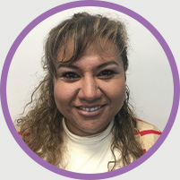

REPRESENTANTE ASIGNADO
JAQUELINE CHIRINO
Cel. (55)44666869
Tel.52587125
ACCEDER AHORA
Ingrese hoy mismo y
disfrute de lo siguiente:
Acesso a Academia, nuestra plataforma de educación
médica continua con puntos de certificación por
reconocidos colegios de medicina
Entrega de muestra médica
Acceso a contenido exclusivo de actualidad médica
Invitaciones a eventos prescenciales y en línea de
congresos y ponencias nacionales e internacinales
Material de apoyo para su consulta
Asesorias de un representante médico


 Entrega de muestra médica
Entrega de muestra médica Invitaciones a eventos prescenciales y en línea de
Invitaciones a eventos prescenciales y en línea de  Asesorias de un representante médico
Asesorias de un representante médico